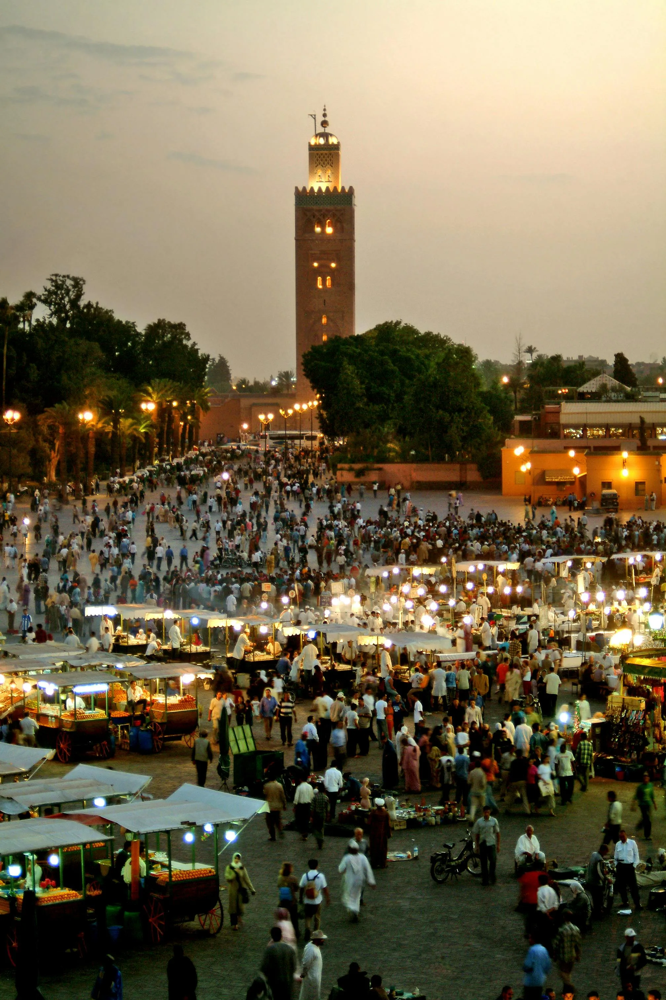
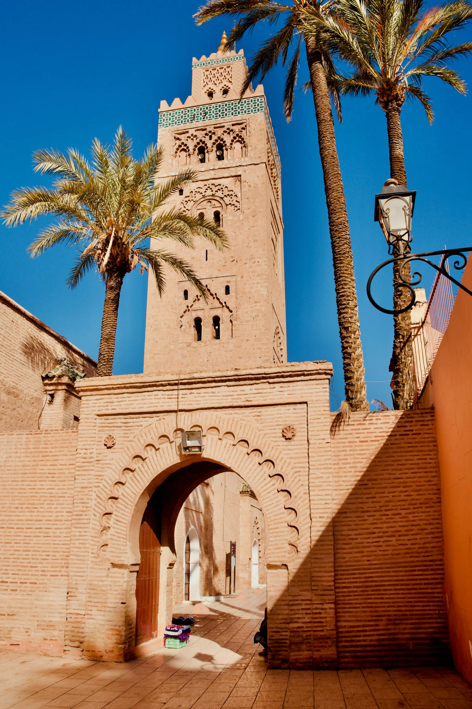
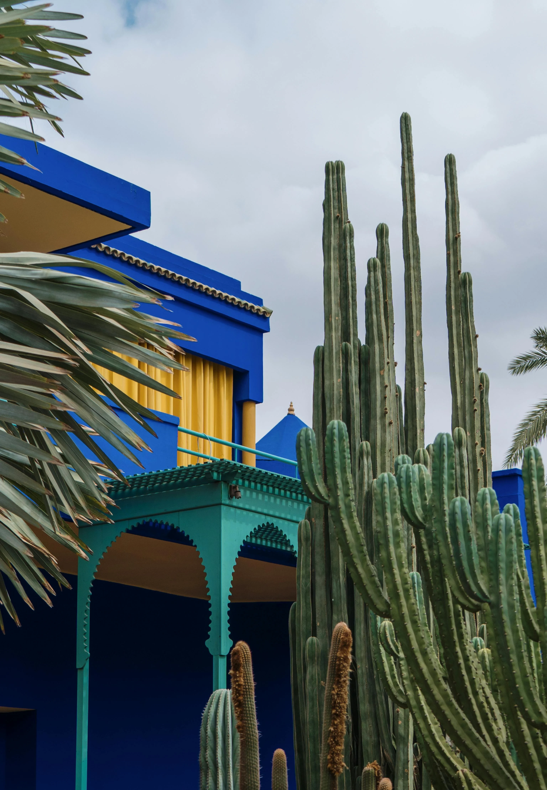
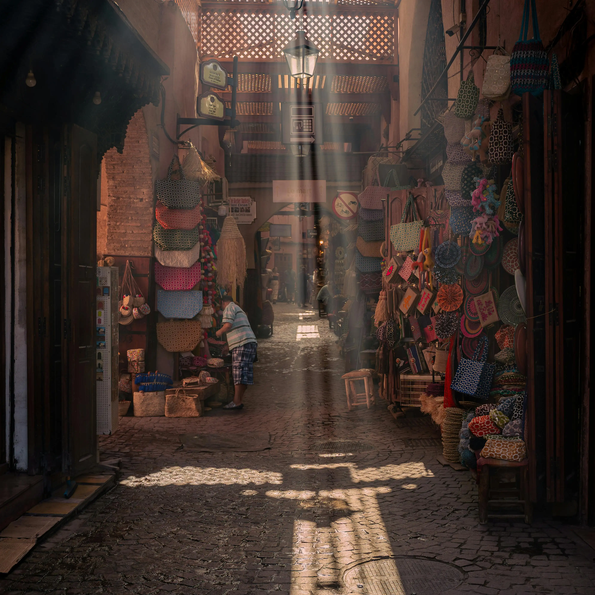
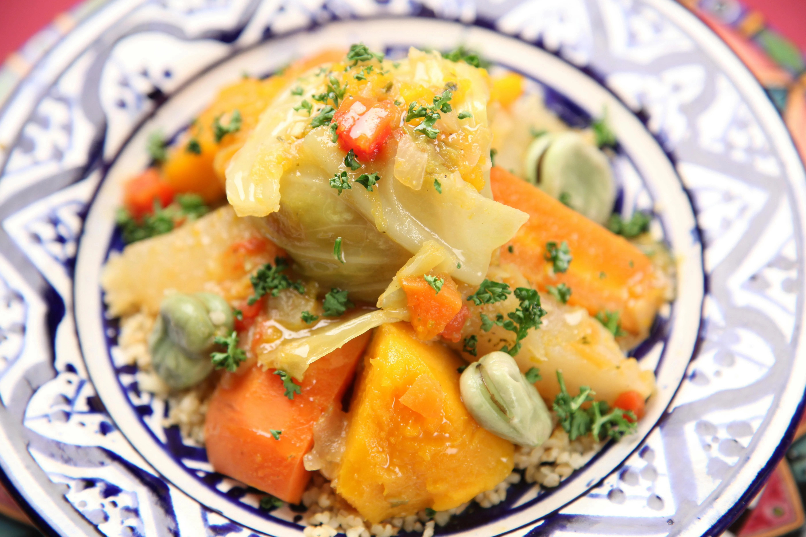

Plaza Jemaa el-Fna
El corazón de la ciudad. Música, puestos de comida y luces por todas partes. Un lugar que nunca se detiene.
Caótica, cálida y llena de vida. Es imposible no quedarse con ganas de volver.
ExplorarMarrakech es una ciudad con mucha energía. Su medina, reconocida como Patrimonio de la Humanidad por la UNESCO, está llena de calles estrechas, zocos y aromas que te envuelven desde que llegas.
En barrios como Guéliz o Hivernage descubrirás una versión más moderna: cafés tranquilos, tiendas y galerías. Y si buscas un respiro, los Jardines Majorelle son perfectos para relajarte un rato entre colores y vegetación.
Marrakech se disfruta caminando, comiendo y observando. Cada calle tiene su encanto, y eso es lo que hace que no se parezca a ninguna otra ciudad.


El corazón de la ciudad. Música, puestos de comida y luces por todas partes. Un lugar que nunca se detiene.

Un espacio tranquilo y lleno de color, perfecto para pasear y hacer una pausa del ritmo intenso de la ciudad.

Calles llenas de vida, artesanos, especias y tiendas con todo tipo de objetos. No hay dos visitas iguales.
La comida en Marrakech tiene carácter. Prueba un buen tajine, un cuscús casero o un té a la menta bien dulce en alguna terraza con vistas.
En los mercados hay dátiles, aceitunas y dulces típicos como la chebakia o los cuernos de gacela. Todo sabe mejor cuando se come sin prisa.
"La cocina marroquí es sencilla pero llena de sabor. Comer aquí es parte del viaje."
